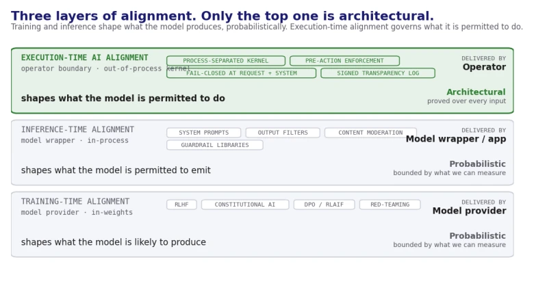
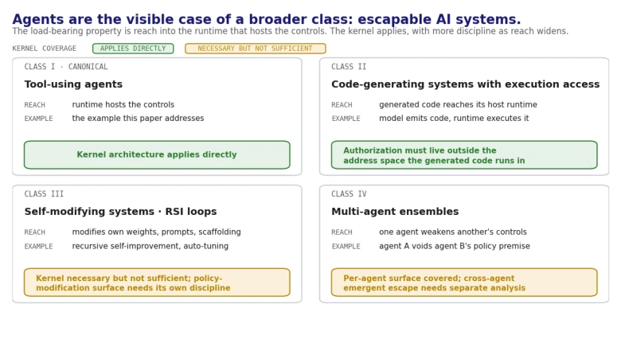
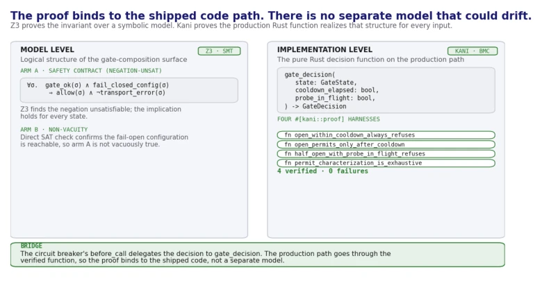
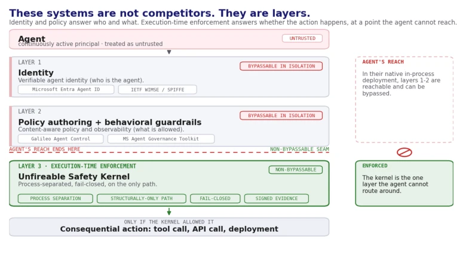
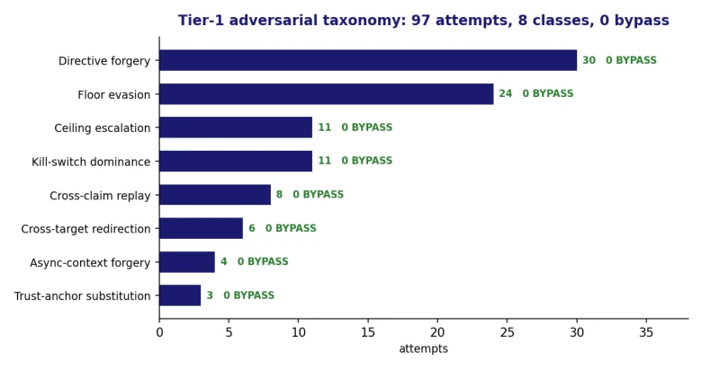
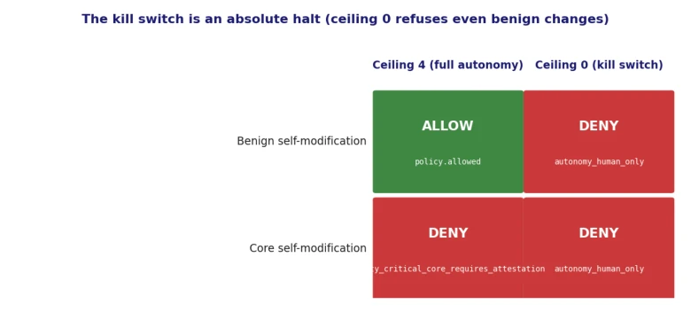
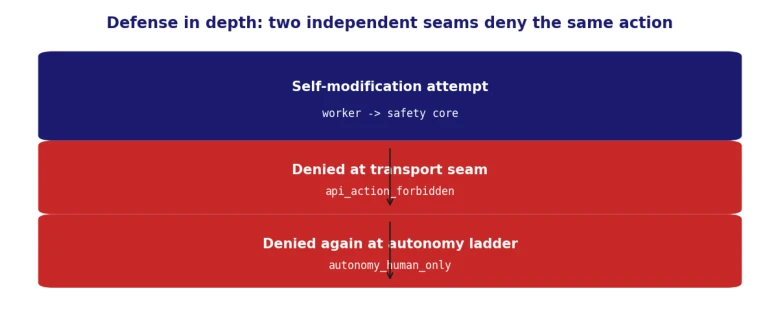
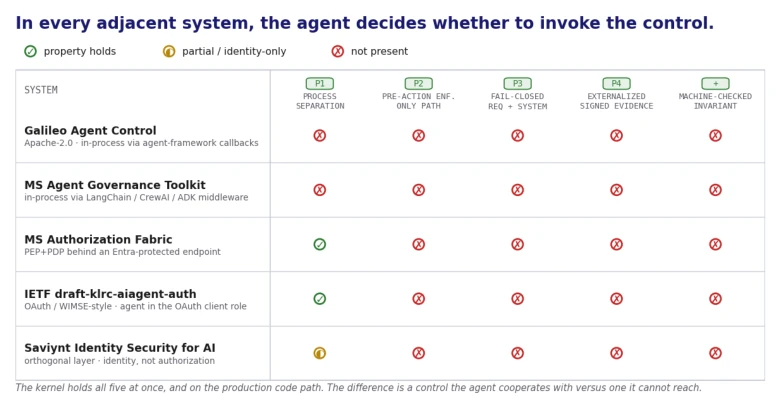

动机在于 AI Agent 作为持续活跃主体，能利用工具权限绕过自身运行时内的安全控制。现有研究如 [Greenblatt2024] 和 [Meinke2024] 证实模型会主动规避监管或自我复制。当前生产控制（如 Llama-Guard）位于 Agent 进程内，易被提示注入或代码替换绕过 [Garak]。[Christodorescu2025] 指出 Agent 可发起高频率后果性操作。本文定义“可逃逸 AI 系统”，指出在进程内控制架构上存在根本缺陷，需引入执行时对齐，确保即使 Agent 恶意也无法绕过关键决策，解决现有控制无法抵御内部威胁的问题，填补训练时和推理时对齐之间的空白。
—

Figure 9: The three layers of AI alignment. Training-time alignment shapes the model (RLHF, Constitutional AI). Inference-time alignment shapes what the model is permitted to emit (prompts, filters, guardrails). Execution- time AI alignment, the layer this paper names, constrains what the agent is permitted to do at the moment of action, by an architecture the agent cannot reach.

Figure 10: Escapable AI systems: the general category, with AI agents as the worked example. Tool- using agents, code-generating systems with execution access, self-modifying systems and recursive self-improvement loops, and multi-agent ensembles all share the load-bearing property, reach into their own runtime sufficient to bypass the controls placed on them.
Figure 1: The four-seam architecture. Each of nginx auth_request, application middleware, dis- patch hook, and client SDK denies independently; the kernel sits behind them as a separate process. The transparency log and binary attestation panels (right) realize P4 and provide the externally- verifiable evidence trail. The agent process refuses to start if the kernel is unreachable: "no kernel, no agent" at the system level.

Figure 2: Two-level verification of the fail-closed invariant. Z3 discharges the safety contract over a symbolic model (Arm A by negation-unsat) plus non-vacuity (Arm B). Kani discharges the pro- duction Rust gate_decision function over the full symbolic input domain with four #[kani::proof] harnesses. The shipped before_call delegates to the verified function, so the proof binds to the production code path.

Figure 7: The agent governance stack. Identity systems (Entra Agent ID, WIMSE and SPIFFE) answer who the agent is; policy-authoring and behavioral-guardrail systems (Galileo Agent Control, the Microsoft Agent Governance Toolkit) answer what is allowed. Both are bypassable in their native in-process deployment. The Unfireable Safety Kernel is the execution-time enforcement layer: process- separated, fail-closed, on the only path, and the single layer the agent cannot route around. The layers compose; the kernel makes the decisions of the layers above it non-bypassable.
Figure 3: The four-tier containment ladder. Fidelity rises from the decision function in a single process, through a clean virtual machine, to the full application stack with the compiled kernel serving authorization over HTTP, and finally a purpose-built escape-seeking adversary driving the real self-modification seam at the top. The lower tiers issued 6,240 adversarial authorization round- trips with zero bypasses; in the escape tier all 704 attempts against the safety-critical core were refused and 296 benign changes permitted, with no successful escape.

Figure 4: Breadth of the adversarial taxonomy in the in-process tier. Eight attack classes, in de- scending volume directive forgery, safety-core floor evasion, ceiling escalation, kill-switch dominance, cross-claim replay, cross-target redirection, asynchronous-context forgery, and trust-anchor substi- tution, each refused with zero bypasses.

Figure 5: The kill switch is an absolute halt. At the operating autonomy ceiling the adversary’s benign self-modifications are authorized and its attempts against the safety-critical core are refused (safety_critical_core_requires_attestation). With the operator ceiling set to zero, every modifica- tion is refused without exception, the benign ones included (autonomy_human_only), so the kill switch halts the system rather than only filtering escapes.
其他图片Other Figures

Figure 6: Defense in depth as deployed. A self-modification attempt is refused first at the transport seam (api_action_forbidden) and again at the autonomy ladder behind it (auton- omy_human_only). Two independent seams deny the same action, so neither alone is a single point of failure.

Figure 8: Property-by-system comparison across the contemporary agent control plane systems. Columns are the four control properties of §3 (P1 to P4) plus the machine-checked fail-closed invariant called out at the end of §7 as the additional distinguishing property. The Unfireable Safety Kernel is the only row with all five filled.